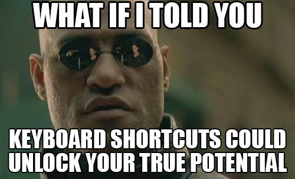

Cut, Copy, Paste
- Cut: Ctrl + X
- Copy: Ctrl + C
- Paste: Ctrl + V
Undo, Redo
- Undo: Ctrl + Z
- Redo: Ctrl + Shift + Z or Ctrl + Y
Duplicate
Select
- Select Word: Ctrl + D
- Select Line: Ctrl + L
- Select All: Ctrl + A
- Select Every Instance: Alt + f3
Move Cursor
- Move Cursor to Previous Word: Ctrl + ←
- Move Cursor to Next Word: Ctrl + →
- Move Cursor to Start of Line: HOME
- Move Cursor to End of Line: End
- Move Cursor to Start of Document: Ctrl + Home
- Move Cursor to End of Document: Ctrl + End
Use the move cursor commands to quickly traverse a document without using a mouse. Also, if you hold ⇧ (Shift) down while using the commands then the text within the move will be selected.
Jump
- Jump to Opening/Closing Parentheses, Brackets, Braces: Ctrl + M
- Jump to Definition: Ctrl + R
Indent, Unindent
- Indent: Tab or Ctrl + ]
- Unindent: Ctrl + [
Toggle Comment
Mark the area and coment it out with simple command
Tab Management
- New Tab: Ctrl + N
- Switch Tab Left: Ctrl + PgUp
- Switch Tab Right: Ctrl + PgDn
- Close Tab: Ctrl + W
- Reopen Tab: Ctrl + ⇧ + T
Quick Open
Find